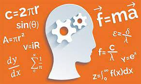
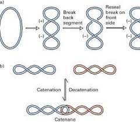
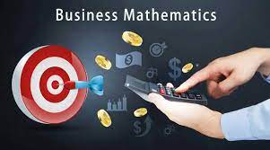

Hi, I am Baraa Taha
Iam student in qatar university, my major Mathmetices
Recent posts
Education
I studied primary school at Al-Huda Primary School and completed middle school in Fatima bint Al-Waleed, and then Al-Rayyan Secondary School for Girls
why mathematics
I love math since middle school, I prefer arithmetic and analysis. My middle school teacher used different strategies to simplify the math, so I think this reasons to like math.
mathematics in engineering
The differential equations in mathematics find importance in electrical engineering for solving circuit equations. There is another subject in electrical engineering related to electromagnetic theory which involve mathematical concepts on calculus, and building sound knowledge-base on learning triple integrals and integration over a closed surface.
mathematics in medical
Doctors and nurses use math when they write prescriptions or administer medication. Medical professionals use math when drawing up statistical graphs of epidemics or success rates of treatments. Math applies to x-rays and CAT scans
mathematics in business
Commercial organizations use mathematics in accounting, inventory management, marketing, sales forecasting, and financial analysis. It helps you know the financial formulas, fractions; measurements involved in interest calculation, hire rates, salary calculation, tax calculation etc